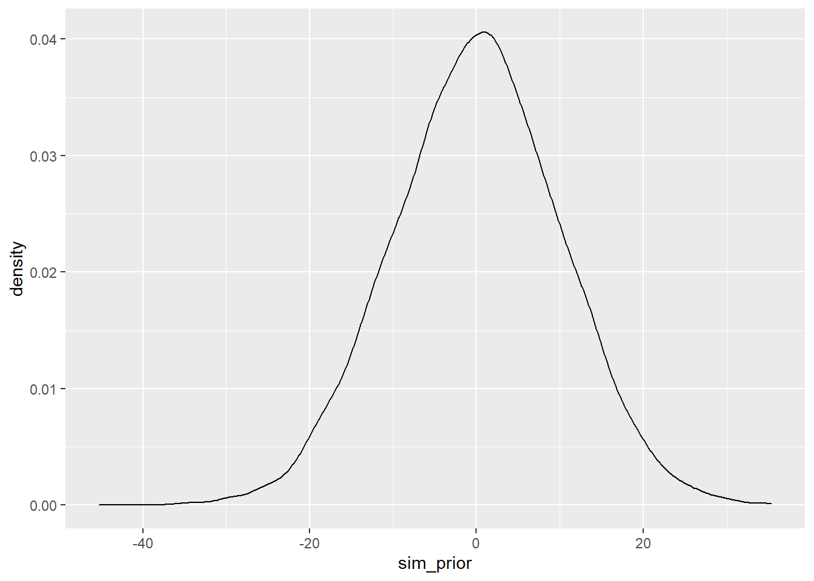

Chapter 4 Geocentric Models
4.1 Chapter Notes
I haven’t written chapter notes for the first five chapters.
4.2 Questions
4E1
Question
In the model definition below, which line is the likelihood?
\[ \begin{aligned} y_i &\sim \text{Normal}(\mu, \sigma) \\ \mu &\sim \text{Normal}(0, 10) \\ \sigma &\sim \text{Exponential}(1) \end{aligned} \]
Answer
\(y_i ∼ \text{Normal}(µ, σ)\)
4E2
Question
In the model definition just above, how many parameters are in the posterior distribution?
Answer
Two parameters, \(\mu\) & \(\sigma\). \(y_i\) is not a parameter, it’s the observed data.
4E3
Question
Using the model definition above, write down the appropriate form of Bayes’ theorem that includes the proper likelihood and priors.
Answer
In Bayes’ theorem, we want to end up with the probability of some hypothesis, given some data. In this case, our hypotheses are values for parameters \(\mu\) and \(\sigma\). The probability of seeing the data (\(y_i\)) that we do comes from our likelihood, in this case we’ve assumed the data is the result of a normal distribution. Let’s say we want to find the probability that our parameter values are \(\hat\mu\) and \(\hat\sigma\) given some piece of data \(y_i\). We apply Bayes’ theorem like this:
\[ \begin{aligned} P(\hat\mu,\hat\sigma | y_i) &= \frac{P(y_i | \hat\mu, \hat\sigma)P(\hat\mu)P(\hat\sigma)}{\int\int P(y_i | \mu, \sigma)P(\mu)P(\sigma) d\mu d\sigma} \\ \\ &= \frac{N(y_i | \hat\mu, \hat\sigma)N(\hat\mu | 0,10)\text{Exp}(\hat\sigma|1)}{\int\int N(y_i | \mu, \sigma)N(\mu | 0,10)\text{Exp}(\sigma|1) d\mu d\sigma} \end{aligned} \]
I mean \(N(y_i | \mu, \sigma)\) to be read "the probability of observing \(y_i\) given that it is normally distributed with parameters \(\mu\) & \(\sigma\). That notation is copied from page 78.
4E4
Question
In the model definition below, which line is the linear model?
\[ \begin{aligned} y_i &\sim \text{Normal}(\mu, \sigma) \\ \mu_i &= \alpha + \beta x_i \\ \alpha &\sim \text{Normal}(0, 10) \\ \beta &\sim \text{Normal}(0, 1) \\ \sigma &\sim \text{Exponential}(2) \\ \end{aligned} \]
Answer
\(\mu_i = \alpha + \beta x_i\)
This is the assertion that \(\mu_i\) is a linear function of \(x_i\).
4E5
Question
In the model definition just above, how many parameters are in the posterior distribution?
Answer
Three parameters, \(\alpha\), \(\beta\) & \(\sigma\).
4M1
Question
For the model definition below, simulate observed \(y\) values from the prior (not the posterior).
\[ \begin{aligned} y_i &\sim \text{Normal}(\mu, \sigma) \\ \mu &\sim \text{Normal}(0, 10) \\ \sigma &\sim \text{Exponential}(1) \\ \end{aligned} \]
Answer
num_obs <- 1e4
sim_prior <- rnorm(num_obs,
mean=rnorm(num_obs, mean=0, sd = 10) ,
sd=rexp(num_obs, rate = 1))
ggplot()+
geom_density(aes(x=sim_prior))
4M2
Question
Translate the model just above into a quap formula.
Answer
y ~ dnorm(mu, sigma) mu ~ dnorm(0, 10) sigma ~ dexp(1)
4M3
Question
Translate the quap model formula below into a mathematical model definition.
y ~ dnorm( mu , sigma ),
mu <- a + b*x,
a ~ dnorm( 0 , 10 ), . b ~ dunif( 0 , 1 ),
sigma ~ dexp( 1 )
4.2.0.1 Answer
\[ \begin{aligned} y_i &\sim \text{Normal}(\mu, \sigma) \\ \mu_i &= \alpha + \beta x_i\\ \alpha &\sim \text{Normal}(0, 10) \\ \beta & \sim \text{Uniform}(0,1) \\ \sigma & \sim \text{Exponential}(1) \end{aligned} \]
4M4
Question
A sample of students is measured for height each year for 3 years. After the third year, you want to fit a linear regression predicting height using year as a predictor.
Write down the mathematical model definition for this regression, using any variable names and priors you choose. Be prepared to defend your choice of priors.
Answer
hi ∼ Normal(µ, σ)
µi = α + βyi
α ~ Normal(178, 20)
β ∼ Normal(0,10)
σ ∼ Exponential(0.05)
4M5
Question
Now suppose I remind you that every student got taller each year. Does this information lead you to change your choice of priors? How?
Answer
Yes, I would revise β to something like β ∼ Exponential(0.2).
Now it can only be positive (before I wasn’t sure if we were following the same students, or the same class with a new intake of students).
Probably still anticipating too much height growth with this prior, assuming these are university students. On the other hand Dennis Rodman grew like 8 inches one summer after high school apparently so want to keep open the possibility.
4M6
Question
Now suppose I tell you that the variance among heights for students of the same age is never more than 64cm. How does this lead you to revise your priors?
Answer
I think my previous prior σ ∼ Exponential(0.05) is probably still fine. If anything this question makes me think I wasn’t being conservative enough with my first choice of priors.
4M7
Question
Refit model m4.3 from the chapter, but omit the mean weight xbar this time. Compare the new model’s posterior to that of the original model. In particular, look at the covariance among the parameters. What is different? Then compare the posterior predictions of both models.
Answer
data(Howell1)
d <- Howell1
d2 <- d[ d$age >= 18 , ]
# define the average weight, x-bar
xbar <- mean(d2$weight)
# fit model
set.seed(100)
m4.3 <- quap( alist(
height ~ dnorm( mu , sigma ) ,
mu <- a + b*( weight - xbar ) ,
a ~ dnorm( 178 , 20 ) ,
b ~ dlnorm( 0 , 1 ) ,
sigma ~ dunif( 0 , 50 )
) ,
data=d2 )
set.seed(100)
m4.3.2 <- quap( alist(
height ~ dnorm( mu , sigma ) ,
mu <- a + b*( weight ) ,
a ~ dnorm( 178 , 20 ) ,
b ~ dlnorm( 0 , 1 ) ,
sigma ~ dunif( 0 , 50 )
) ,
data=d2 )Chapter questions unfinished.